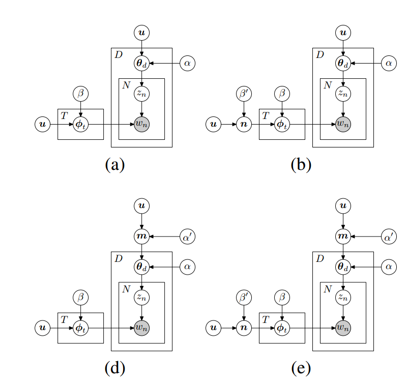
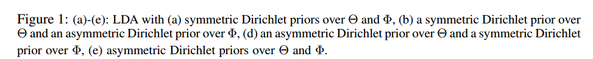
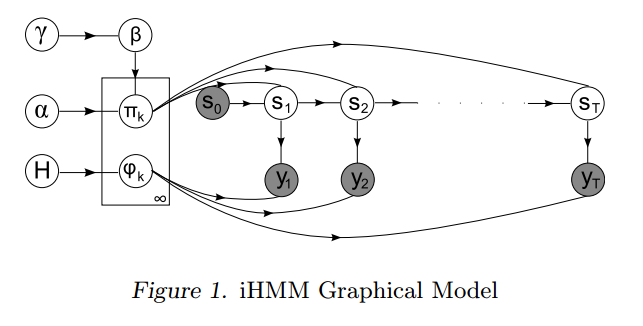
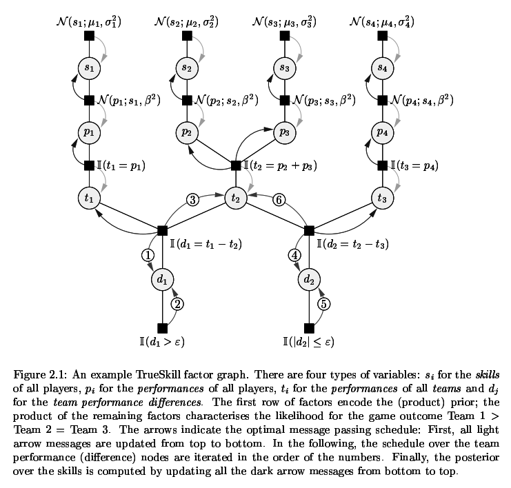
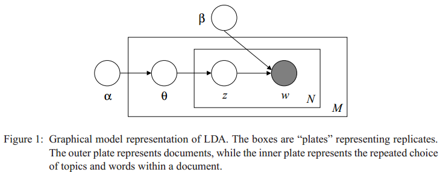
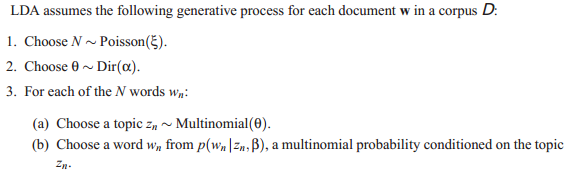
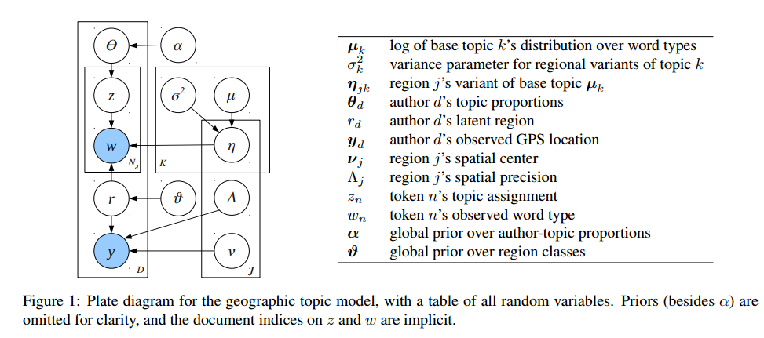
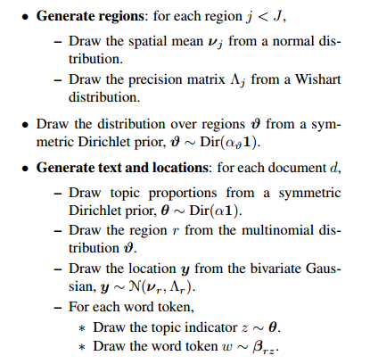
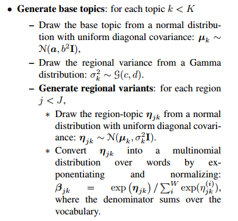

Stop using Plate Notation
Rob Zinkov
2013-07-28
There is this practice in many machine learning papers to describe the statistical model using a graphical representation called Plate Notation. Many people use it as a clear and compact way to summarize their models. I would like to argue that plate notation is largely useless, and hinders more than helps readers understand what was done.
The primary issues with this notation is doesn’t handle complex model very well, it hides too many details while in many ways not hiding enough of them all while being very hard to read and comprehend.
Basic Example
What do I mean by hard to read? Quick tell me what these models do?

These are some models for doing Latent Dirichlet Allocation using asymmetric Dirichlet priors on the topic mixtures. Is it obvious from the above image?

Does that help? Do you know everything you need now to understand the model that was used?
Well, you know everything the caption bothered to tell you. You don’t know the distribution that all the random variables came from.
Now this isn’t a slight against the research behind this paper. Wallach and friends have a cool model on their hands, they just chose a bad way to represent it.
Keep in the mind plate notation, while good at grouping variables that share a latent variable, it is very bad at compacting models where there are long chains of dependencies. This is most obvious in something like a hidden markov model.

Now you could say, it’s ok to just expand things out when the notation is failing, but these are common models that simply aren’t being expressed compactly. And you want that compactness especially when lots of repeating elements start happening. Something like TrueSkill with its repeating elements is not something you want in its raw form.

Basic Solution
So if we aren’t going to use something that looks more like modern art than a diagram. How will we communicate our models?
Well, we just tell the generative story. We show how we arrive at a sample of our data from all the latent variables in our system. This isn’t even new. Consider the plate notation in the original LDA paper.

In the same paper we have the generative story. Note how much easier and clear the model becomes once expressed in this form.

Yet, we never get such a story/pseudocode in many papers that use complex graphical models. The story has to be put together from scattered jigsaw puzzle pieces laid throughout the paper.
Describing the model as a story is the better way. Here is a more complicated model trained on twitter data showing how language and word usage varys across the country.

There is a lot going here, but interestingly Eisenstein and friends, in addition to giving us a pile of boxes and arrows, also provide the generative story in a single table.
 
It does take up more space, but can be scanned and understood entirely on its own! The plate notation is redundant. A generative story is both more compact and more informative.
So please stop using plate notation. Just tell me the generative story so I can implement it quickly and get what you are doing at a glance.